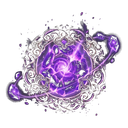
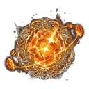

Epic Essence
T1Released when Epic gear is salvaged. Spent on quality upgrades, runes and stat rerolls.
| Item tier | Essence per dismantled item |
|---|---|
| T1 | x2 |
| T2 | x3 |
| T3 | x4 |
| T4 | x6 |
| T5 | x8 |
| T6 | x12 |
| T7 | x17 |
| T8 | x24 |
| T9 | x35 |
| T10 | x50 |
Quality upgrade, stat reroll and runes all spend essence of the item's quality.

Released when Epic gear is salvaged. Spent on quality upgrades, runes and stat rerolls.

Released when Legendary gear is salvaged. Spent on quality upgrades, runes and stat rerolls.

Released when Normal gear is salvaged. Spent on quality upgrades, runes and stat rerolls.

Released when Rare gear is salvaged. Spent on quality upgrades, runes and stat rerolls.